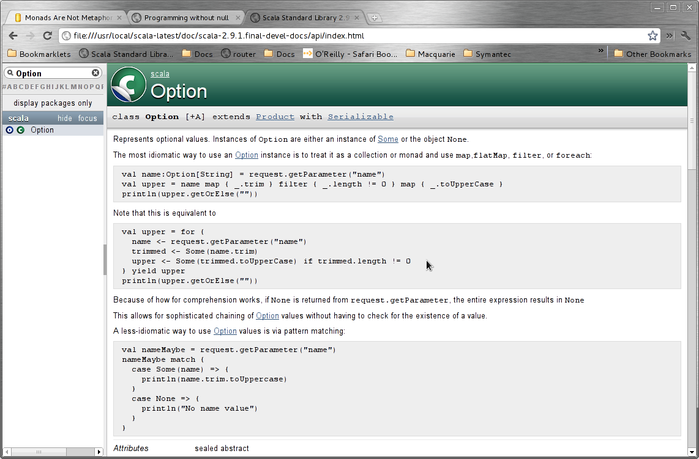

Karl Roberts
eg "2w 3d 4h 5s"
eg "2weeks 3days 4hours 5secs 300ms"
eg "8 hours per day, 5 days per week"
eg "24 hours per day, 8 days per week"
so rather than "2w 4d 0h 5m"
I want "2w 4d 5m"
error free and not pollute the code with tedious null checks!
Maybe... (sic)

Certainly looks useful for getting rid of nulls, I have Some(time) or None, and if I need to chain then I don't need to check for null or None
Looks like magic, but I like to understand stuff, so here's a simple explanation, shamelessly borrowed from Daniel Spiewak's "Monad's are not a Metaphore"
The significant point is that monads combine one thing together with another in sequence. In fact, this is what all monads do. You start out with Thing One, and you have a function which will (given One) will give you Thing Two. Let’s look at some more code:
case class Thing[+A](value: A)
val a = Thing(1)
val b = Thing(2)Imagine that we find ourselves writing a lot of code which looks like this:
def foo(i: Int) = Thing(i + 1)
val a = Thing(1)
val b = foo(a.value) // => Thing(2)Here’s the question: can we come up with a nicer way of going from a to b? Basically, we want to encapsulate this pattern as a more general tool.
What we want is a function which pulls the value out of Thing and then calls another function with that value, returning the result of that function call (which will be a new Thing). Since we’re good object-oriented programmers, we will define this as a method on class Thing:
case class Thing[+A](value: A) {
def bind[B](f: A => Thing[B]) = f(value)
}def foo(i: Int) = Thing(i + 1)
val a = Thing(1)
val b = a bind foo // => Thing(2)To understand why this is, let’s look at what it is that makes Thing a monad:
val a = Thing(1)
a bind { i => Thing(i + 1) }This is the heart of the Monad.
Scala calls this function “flatMap“. Haskell calls it “>>=“.
What’s interesting here is the fact that bind/flatMap is how you combine two things together in sequence. We start with one thing and use its value to compute a new thing.
Option - one of the easiest to understand and definitely easiest to see where I can use it. Consider the following:
def firstName(id: Int): String = ... // fetch from database
def lastName(id: Int): String = ...
def fullName(id: Int): String = {
val fname = firstName(id)
if (fname != null) {
val lname = lastName(id)
if (lname != null)
fname + " " + lname
else
null
} else {
null
}
}A fairly common pattern. We have two functions (firstName and lastName) which are responsible for producing some data which may or may not be available. If the data is available, then it is returned. Otherwise, the result of these functions will be null.
To use it it looks like the best and safest thing I can do is check fot the nulls.
If I wrap it in Thing...
def firstName(id: Int): Thing[String] = ... // fetch from database
def lastName(id: Int): Thing[String] = ...
def fullName(id: Int): Thing[String] = {
firstName(id) bind { fname =>
if (fname != null) {
lastName(id) bind { lname =>
if (lname != null)
Thing(fname + " " + lname)
else
Thing(null)
}
} else {
Thing(null)
}
}
}See it?
sealed trait Option[+A] {
def bind[B](f: A => Option[B]): Option[B]
}
case class Some[+A](value: A) extends Option[A] {
def bind[B](f: A => Option[B]) = f(value)
}
case object None extends Option[Nothing] {
def bind[B](f: Nothing => Option[B]) = None
}Option has two different instantiations: Some, which contains a value, and None, which doesn’t contain a value.
Think of None as being just an easier way of writing Thing(null).
What’s interesting is that Some and None need to have two different definitions of bind.
def firstName(id: Int): Option[String] = ... // fetch from database
def lastName(id: Int): Option[String] = ...
def fullName(id: Int): Option[String] = {
firstName(id) bind { fname =>
lastName(id) bind { lname =>
Some(fname + " " + lname)
}
}
}because the implementation of List's bind is flatten(map(f)
def flatMap[B](f: A => Iterable[B]): List[B]val x:List[List[Int]] = List(List(1),List(2),Nil,List(4))
val r1 = x.flatten
assert(List(1,2,4) == r1)
println("r1 :=" + r1)
val x1:List[List[Int]] = List(List(1),List(2),List(),List(4))
val rx1 = x1.flatten
assert(List(1,2,4) == rx1)
println("rx1 :=" + rx1)
val y:List[Option[Int]] = List(Some(1),Some(2),None,Some(4))
val r2 = y.flatten
println("r2 :=" + r2)
assert(r1 == r2)
//now show flatten is flatmap with id or flatmat with Unit
val z:List[List[Int]] = List(List(1),List(2),Nil,List(4))
val r3 = z flatMap identity
println("r3 :=" + r3)
assert(r1 == r3)val oneSec = 1
val oneMin = 60 * oneSec
val oneHour = 60 * oneMin
val onejiraDay = 8 * oneHour // 8 hours day
val oneJiraWeek = 5 * onejiraDay // 5 days a week
val oneNormalDay = 24 * oneHour // 8 hours day
val oneNormalWeek = 7 * oneNormalDay // 5 days a week
val jira_2w_3d_4h_25m_55s = (2 * oneJiraWeek) + (3 * onejiraDay) + (4 * oneHour) + (25 * oneMin) + (55 * oneSec)
val jira_2w_4h_25m_55s = (2 * oneJiraWeek) + (4 * oneHour) + (25 * oneMin) + (55 * oneSec)We need a type that models a time representation, Given an Int of Time it produces a List broken down into units of time suitable for its rendering
EG an 8 hour a day 5 days a week simple TimeRepresentation that only shows w d h m s
val timerep:TimeRepresentation = //... some time rep to be developed
val res1 = timerep.timeUnits(Time(jira_2w_3d_4h_25m_55s))
val res2 = timerep.timeUnits(Time(jira_2w_4h_25m_55s))
assert(res1 == List(Some(2), Some(3), Some(4), Some(25), Some(55))
assert(res2 == List(Some(2), None, Some(4), Some(25), Some(55))
assert("2w 3d 4h 25m 55s" == timerep.show(Time(jira_2w_3d_4h_25m_55s)) )
assert("2w 4h 25m 55s" == timerep.show(Time(jira_2w_4h_25m_55s)) )trait TimeRepresentation {
val daysPerWeek: Int
val hoursPerDay: Int
val secsPerMin = 60
val minsPerHour = 60
val oneSec: Int = 1
val oneMin = secsPerMin * oneSec
val oneHour = minsPerHour * oneMin
val oneDay = hoursPerDay * oneHour
val oneWeek = daysPerWeek * oneDay
def timeUnits(t: Time) = List(weeks(t), days(t), hours(t), mins(t), secs(t))
def weeks(t: Time): Option[Int] = t.seconds / oneWeek match {
case x if (x > 0) => Some(x)
case _ => None
}
def days(t: Time): Option[Int] = (t.seconds - ((weeks(t) getOrElse 0)) * oneWeek) / oneDay match {
case x if (x > 0) => Some(x)
case _ => None
}
def hours(t: Time): Option[Int] = (t.seconds - ((weeks(t) getOrElse 0) * oneWeek) - ((days(t) getOrElse 0)) * oneDay) / oneHour match {
case x if (x > 0) => Some(x)
case _ => None
}
def mins(t: Time): Option[Int] = (t.seconds - ((weeks(t) getOrElse 0) * oneWeek) - ((days(t) getOrElse 0) * oneDay) - ((hours(t) getOrElse 0) * oneHour)) / oneMin match {
case x if (x > 0) => Some(x)
case _ => None
}
def secs(t: Time): Option[Int] = (t.seconds - ((weeks(t) getOrElse 0) * oneWeek) - ((days(t) getOrElse 0) * oneDay) - ((hours(t) getOrElse 0) * oneHour) - ((mins(t) getOrElse 0) * oneMin)) / oneSec match {
case x if (x > 0) => Some(x)
case _ => None
}
}
case class Time(val seconds: Int)trait TimeRepresentation {
val daysPerWeek: Int
val hoursPerDay: Int
val secsPerMin = 60
val minsPerHour = 60
val oneSec: Int = 1
val oneMin = secsPerMin * oneSec
val oneHour = minsPerHour * oneMin
val oneDay = hoursPerDay * oneHour
val oneWeek = daysPerWeek * oneDay
def timeUnits(t: Time) = List(weeks(t), days(t), hours(t), mins(t), secs(t))
def wrapIntInOption(i: Int): Option[Int] = i match {
case x if (x > 0) => Some(x)
case _ => None
}
def weeks(t: Time) = wrapIntInOption(t.seconds / oneWeek)
def days(t: Time) = wrapIntInOption((t.seconds - ((weeks(t) getOrElse 0)) * oneWeek) / oneDay)
def hours(t: Time) = wrapIntInOption((t.seconds - ((weeks(t) getOrElse 0) * oneWeek) - ((days(t) getOrElse 0)) * oneDay) / oneHour)
def mins(t: Time) = wrapIntInOption((t.seconds - ((weeks(t) getOrElse 0) * oneWeek) - ((days(t) getOrElse 0) * oneDay) - ((hours(t) getOrElse 0) * oneHour)) / oneMin)
def secs(t: Time) = wrapIntInOption((t.seconds - ((weeks(t) getOrElse 0) * oneWeek) - ((days(t) getOrElse 0) * oneDay) - ((hours(t) getOrElse 0) * oneHour) - ((mins(t) getOrElse 0) * oneMin)) / oneSec)
}
case class Time(val seconds: Int)Given a List of units per step, fold down the list to calculate units at each step
trait TimeRepresentation {
def numUnitsPerStep: List[Int]
def times(t: Time) = timeUnits(t.seconds, numUnitsPerStep: List[Int])
def wrapIntInOption(i: Int): Option[Int] = i match {
case x if (x > 0) => Some(x)
case _ => None
}
def timeUnits(time: Int, stepPerUnit: List[Int]): List[Option[Int]] = {
@scala.annotation.tailrec
def timeUnitsHelper(time: Int, stepPerUnits: List[Int], resultSoFar: List[Option[Int]]): List[Option[Int]] = {
//fold down the stepPerUnits the multiplying , to get num of timeunits at that place in the list
// remove num units of previous recursion the divide the remainder by timeunits at this place then recurse again
if (stepPerUnits == List()) {
resultSoFar
}
else {
val unitsAtThisOrder = stepPerUnits.foldLeft(1)(_ * _)
val numTimeUnitsAtThisLevel = time / unitsAtThisOrder
val o: Option[Int] = wrapIntInOption(numTimeUnitsAtThisLevel)
val res = o :: resultSoFar
val amountToRemoveForNextIt: Int = numTimeUnitsAtThisLevel * unitsAtThisOrder
val timeRemaining = (time - amountToRemoveForNextIt)
//tail recurse
timeUnitsHelper(timeRemaining, stepPerUnits.tail, res)
}
}
//call helper function to actually do the work initialised with empty result
timeUnitsHelper(time, stepPerUnit, List()) reverse
// NB pass in accumulated value List() is passed in so can tail recurse this call no need to compute value on funtion return
// NB Reverse is used as (IDIOM) is quicker to cons a list then revers it than append as list gets larger
}
}
case class Time(val seconds: Int)package com.owtelse.ontime.model
/**
* Created by IntelliJ IDEA.
* User: robertk
*/
trait TimeRepresentation {
//abstract members
def timeUnitNames: List[String]
def numUnitsPerStep: List[Int]
def times(t: Time) = timeUnits(t.seconds, numUnitsPerStep: List[Int])
/**
* Returns The Time representation as a String Each Time Unit will
* have the appropriate timeUnitName appended to it and each unit separated from the other by a space.
* Time Units with no value are skipped from the representation.
*
* eg if the Endings are __"w", "d", "h", "m", "s"__
* the representation could be like
* 2w 3d 2h 5m 55s
* or
* 2w 2h 3m
*/
def show(t: Time) = timeUnitsBoundToNames(t) mkString (" ")
def timeUnitsBoundToNames(t: Time) = {
val zipped = times(t) zip timeUnitNames
for (a <- zipped; r <- a._1 map (_.toString + a._2)) yield r
}
/**
* Given an Int representing time, and a List of UnitsPerStep that you care about produces a List[Option[Int]]
*
*/
def timeUnits(time: Int, stepPerUnit: List[Int]): List[Option[Int]] = {
//fold down the stepPerUnits the multiplying, to get num of timeunits at that place in the list
// remove num units of previous recursion the divide the remainder by timeunits at this place then recurse again
@scala.annotation.tailrec
def timeUnitsHelper(time: Int, stepPerUnits: List[Int], resultSoFar: List[Option[Int]]): List[Option[Int]] = {
if (stepPerUnits == List()) {
resultSoFar
}
else {
val unitsAtThisOrder = stepPerUnits.foldLeft(1)(_ * _)
val numTimeUnitsAtThisLevel = time / unitsAtThisOrder
val res = wrapIntInOption(numTimeUnitsAtThisLevel) :: resultSoFar
val timeRemaining = (time - (numTimeUnitsAtThisLevel * unitsAtThisOrder))
//tail recurse
timeUnitsHelper(timeRemaining, stepPerUnits.tail, res)
}
}
//call helper function to actually do the work initialised with empty result
timeUnitsHelper(time, stepPerUnit, List()) reverse
}
def wrapIntInOption(i: Int): Option[Int] = i match {
case x if (x > 0) => Some(x)
case _ => None
}
}
/**
* namespace to stash some useful time reps
*/
object TimeReps {
val stdJira = simpleRep(List(5, 8, 60, 60, 1))
val jiraRepMS = simpleRepMS(List(5, 8, 60, 60, 1000, 1))
val normalRep = simpleRep(List(7, 24, 60, 60, 1))
val normalRepMS = simpleRepMS(List(7, 24, 60, 60, 1000, 1))
}
/**
* Relies on the the underlying class implementing times, ie must be mixed in with TimeRepresentation
*/
trait SimpleTimeUnitAccessor {
this: TimeRepresentation =>
val timeUnitNames: List[String] = List("w", "d", "h", "m", "s")
// TODO this isn't very extensible, to add months years etc I need to change all the List Indicis
// TODO and rely on timeUnitNames being the right value
def weeks(t: Time): Option[Int] = times(t)(0)
def days(t: Time): Option[Int] = times(t)(1)
def hours(t: Time): Option[Int] = times(t)(2)
def mins(t: Time): Option[Int] = times(t)(3)
def secs(t: Time): Option[Int] = times(t)(4)
}
trait MilisecondTimeUnitAccessor extends SimpleTimeUnitAccessor {
this: TimeRepresentation =>
override val timeUnitNames: List[String] = List("w", "d", "h", "m", "s", "ms")
def milisecs(t: Time): Option[Int] = times(t)(5)
}
// Simple Rep assumes Weeks is highest timeUnit second is smallest and has default timeUnitNames w,d,h,m,s
case class simpleRep(val numUnitsPerStep: List[Int]) extends TimeRepresentation with SimpleTimeUnitAccessor
case class simpleRepMS(val numUnitsPerStep: List[Int]) extends TimeRepresentation with MilisecondTimeUnitAccessor
case class Time(val seconds: Int)